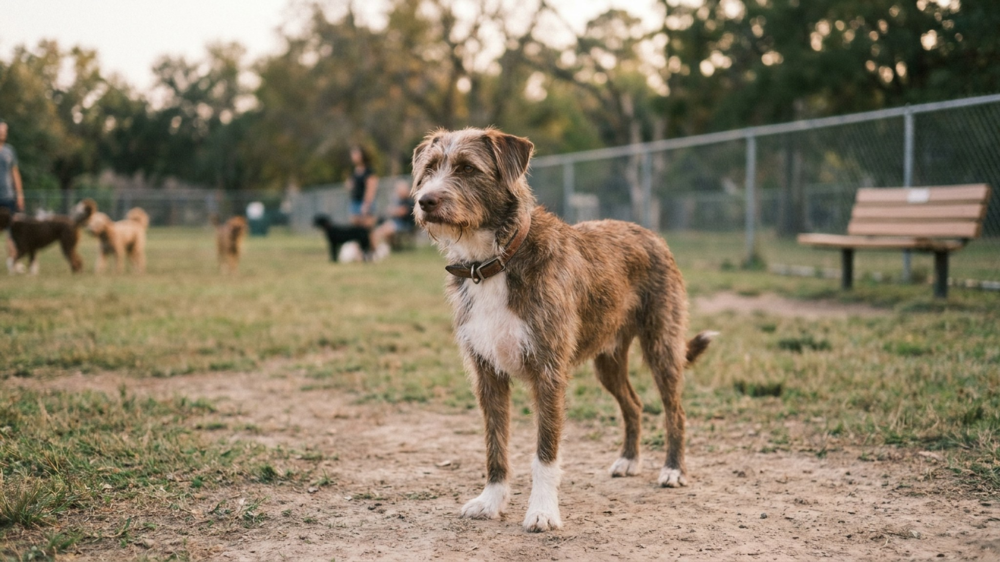

Собачья площадка без драк: 8 правил этикета и сигналы за 5 секунд до конфликта

5 июня 2026 · 9 минут чтения · Поведение · Безопасность · Собаки
Большинство инцидентов на выгульных площадках происходят по одному сценарию: хозяева отвлеклись на телефон, не заметили нарастающее напряжение, и через секунду уже разнимают двух собак. Драка редко возникает «из ниоткуда» — она всегда предваряется цепочкой сигналов, которые можно читать за несколько секунд до столкновения. И почти всегда её можно предотвратить — если знать правила.
Снижающие сигналы: язык примирения
Прежде чем говорить о сигналах конфликта, важно понимать противоположное — снижающие сигналы. Норвежский кинолог Тюрид Ругос в 1990-х годах детально описала их как «calming signals» — сигналы успокоения. Собаки используют их постоянно, чтобы снизить напряжение и избежать конфликта.
- Отведение взгляда. Собака смотрит в сторону при приближении другой — «я не угрожаю».
- Зевание. Не от усталости — как сигнал другой собаке или даже вам: «я спокоен, снизь напряжение».
- Обнюхивание земли. При приближении незнакомой собаки — притворяется занятой. Снижает прямую конфронтацию.
- Замедление движения или полная остановка. Дать другой собаке время оценить и привыкнуть.
- Поворот боком. Не встречать лоб в лоб, а развернуться боком — мягкое приветствие.
Собака, активно использующая снижающие сигналы — хорошо социализированная и ищущая мирного контакта. Собака, которая игнорирует все снижающие сигналы другой собаки — потенциальная проблема на площадке.
Как оценить площадку до входа
Прежде чем открыть калитку, потратьте 60 секунд на наблюдение. Это не паранойя — это базовая часть ответственного выгула.
- Количество и размер собак. Если на небольшой площадке уже 8-10 крупных активных собак — ваш мелкий пёс может быть в опасности просто из-за разницы в размерах, даже без агрессии.
- Баланс группы. Если несколько собак уже сбились в группу и носятся кругами, «заводя» друг друга — возбуждение и без того высокое. Войти в этот момент с вашей собакой значит стать новым раздражителем.
- «Звёзды» площадки. Есть ли собаки, которые явно доминируют — ходят с поднятым хвостом, напрягают тело при приближении других? Они могут негативно отреагировать на новичка.
- Хозяева. Смотрят ли они на своих собак? Хозяин в телефоне — дополнительный риск-фактор: он не среагирует вовремя.
Если картина вас смущает — подождите несколько минут или выберите другое время. Это не слабость, это разумная стратегия.
8 правил этикета на выгульной площадке
- 1. Никаких игрушек и лакомств. Ресурс создаёт конкуренцию. Одна кость, брошенная на общую площадку, может спровоцировать конфликт между собаками, которые только что мирно играли. Игрушки — на индивидуальную прогулку, не на общую.
- 2. Не входите с течной сукой. Течка меняет всё: кобели теряют самоконтроль, агрессия между ними растёт моментально. Течная сука на площадке — гарантированный сценарий для драки между несколькими кобелями.
- 3. Проверьте отзыв перед входом. Если вы не можете подозвать собаку с 5 метров до входа — вы не сможете сделать это и внутри при необходимости. Надёжный отзыв — обязательное условие для площадки.
- 4. Снимайте поводок сразу. Собака на поводке среди свободных собак — конфликт в ожидании. Поводок мешает нормальному языку тела: собака не может сделать шаг назад, избежать контакта, уступить. Напряжение копится и взрывается.
- 5. Не заходите прямо в центр группы. Дайте собаке войти спокойно сбоку от группы и самой выбрать, когда и с кем вступить в контакт. Прямое вхождение в центр активной группы — это вторжение на их территорию по языку собак.
- 6. Дети — не часть собачьей стаи. Маленький ребёнок, бегущий среди собак, может быть воспринят как потенциальная добыча или как возбуждающий объект. Дети должны быть рядом с взрослым, а не свободно бегать среди незнакомых собак.
- 7. Не разговаривайте — наблюдайте. Телефон в карман. Задача на площадке — смотреть на собаку, а не общаться с другими хозяевами. Разговор — потом, у ворот.
- 8. Уходите до усталости. Уставшие собаки становятся раздражительными и хуже контролируют реакции. Если ваш пёс начинает тяжело дышать, меньше реагировать на вас, залезать под скамейки — пора уходить.
Сигналы за 5 секунд до конфликта
Собачий язык тела — точный и последовательный. Если уметь его читать, конфликт можно предотвратить ещё в стадии нарастания. Вот что происходит за несколько секунд до атаки:
- Поза «Т». Одна собака кладёт голову или передние лапы поперёк холки другой, образуя букву Т. Это не игра — это демонстрация доминирования. Если вторая собака не уступает сразу — высокий риск столкновения.
- Замирание. Собака резко перестаёт двигаться, становится «статуей», смотрит в одну точку. Это не растерянность — это момент перед принятием решения.
- Прямой взгляд без отведения глаз. В норме собаки смотрят друг на друга коротко и отводят взгляд — это снижающий сигнал. Немигающий прямой взгляд — это вызов.
- Поднятая шерсть вдоль холки (пилоэрекция). Рефлекторная реакция, собака не контролирует. Означает высокое возбуждение или угрозу.
- Поднятые верхние губы без звука. Тихий оскал — одна из самых серьёзных предупреждений. Тихое гораздо опаснее громкого рычания: рычание — ещё общение, молчаливый оскал — последнее предупреждение.
- Жёсткий высокий хвост с мелкими вибрациями. Не расслабленный виляние, а жёсткий вертикальный хвост с частыми короткими движениями — сигнал высокого возбуждения и готовности к действию.
Увидели хотя бы два-три признака одновременно — немедленно отзывайте собаку. Не ждите, пока она сама разберётся. Не разберётся.
Как разнять дерущихся собак
Первое правило: никогда не суйте руки между дерущимися собаками. Вы получите укус — не из злости, а потому что собака в состоянии аффекта не различает, что кусает.
- Громкий резкий хлопок или звук. Внезапный резкий звук прерывает аффект на 1-2 секунды. Этого хватает, чтобы отвести собаку.
- Вода. Бутылка воды в лицо или ведро — эффективный и безопасный способ разнять. Держите воду на площадке.
- Метод «wheelbarrow». Каждый хозяин берёт свою собаку за задние лапы и разводит в стороны — как тачку. Без рук у морды, без риска укуса. Нужны два человека.
- Не кричите и не бейте. Крик повышает возбуждение. Удар может переключить агрессию на вас или усилить собачью злость.
- После разведения — на поводок и пространство. Не давайте собакам снова приближаться минимум несколько минут. Оцените травмы. При укусах, пробивших кожу — к врачу.
Роль хозяев: самая частая проблема
Большинство инцидентов на площадке происходят не из-за собак — из-за хозяев. Это не обвинение, это наблюдение кинологов, которые работают с площадками профессионально.
- Хозяин в телефоне. Пропускает первые 5-10 секунд нарастания напряжения. К тому моменту, как поднимает взгляд — уже дерутся.
- Хозяин вмешивается в нормальную коммуникацию. Собаки понюхались, одна пошла в T-позицию, вторая уступила и отошла — нормальная коммуникация завершена. Хозяин в панике «спасает» свою собаку, хватает её и тем самым создаёт дополнительный стресс и прерывает нормальное разрешение ситуации.
- Хозяин «болеет» за свою собаку. Напрягается, когда к его собаке приближается другая, передаёт напряжение через поводок или голос — и собака реагирует на это, а не на реальную угрозу.
- Хозяин не знает сигналов своей собаки. Думает, что «хвостиком виляет», хотя хвост жёсткий и высокий — это сигнал высокого возбуждения, не радости.
Решение простое: наблюдать и учиться читать обеих собак — свою и чужую. Это навык, который формируется за несколько месяцев регулярного внимательного присутствия на площадке.
Когда ваш пёс не для площадки
Площадка — не обязательная часть жизни каждой собаки. Есть ситуации, когда лучше выбрать альтернативу.
- Собака с историей агрессии к другим собакам — даже «всегда провоцировали первыми».
- Щенок до полной вакцинации — риск инфекций слишком высок.
- Не социализированная взрослая собака, которая не имела опыта игры с чужими собаками.
- Собака после болезни, операции или в стрессе — иммунитет и психика снижены.
- Нресурсно-агрессивные собаки, которые охраняют хозяина от чужих.
Альтернатива — прогулки с одной-двумя знакомыми собаками, с которыми у вашего пса сложился хороший контакт. Это безопаснее и часто полезнее для социализации, чем хаотичная площадка.
🐾 Питомец ведёт себя странно?
AnimaLife расшифрует поведение кошки и собаки и подскажет, что делать. Попробуйте бесплатно прямо в мессенджере.
Открыть в Telegram → Открыть в MAX →
Что делать после инцидента
Если драка всё же произошла — важно правильно действовать после. Часто хозяева или паникуют и уходят быстро, или остаются в ситуации с повышенным напряжением. Ни то, ни другое не помогает собаке.
- Осмотрите собаку. Сразу после разведения — проверьте наличие ран. Укусы собак могут быть обманчиво маленькими снаружи, но глубокими внутри. Любой укус, пробивший кожу — к ветеринару в тот же день.
- Не возвращайтесь на площадку в этот день. Адреналин держится в крови несколько часов, собака в повышенном возбуждении — риск повторного конфликта высокий.
- Не наказывайте после. Наказание через несколько минут после события собака уже не свяжет с конкретным действием. Только нарушите доверие.
- Проанализируйте что произошло. Спокойно, без самообвинений: где вы находились, что делали, когда появились первые сигналы, что можно было сделать иначе. Это не вина — это обучение.
- Если ваша собака была инициатором агрессии — это сигнал к работе с кинологом или ветеринарным поведенщиком. Реактивность к другим собакам корректируется, но требует профессионального сопровождения.
Площадка для щенков: отдельные правила
Многие площадки имеют зону для щенков (до 6 месяцев) — и это правильно. Щенок и взрослая собака в одном пространстве — разные весовые категории и разные социальные правила.
- Щенок ещё не умеет читать взрослые сигналы — он может «нарушать» правила неосознанно, что провоцирует взрослую собаку.
- Взрослая собака, которая «воспитывает» щенка слишком жёстко, может создать у него устойчивый страх перед другими собаками на всю жизнь.
- Если выбора нет и щенок на общей площадке — выбирайте спокойных взрослых собак со снижающим языком тела для первых контактов.
Итог
Площадка без конфликтов — это не удача, а результат внимания и знания. Оцените обстановку до входа, следуйте 8 правилам этикета, держите взгляд на собаке, а не в телефоне. Читайте напряжение в языке тела: поза Т, замирание, прямой взгляд, тихий оскал — любой из этих сигналов стоит немедленной реакции с вашей стороны. Большинство драк происходит потому, что хозяин не отреагировал вовремя. Не потому что собаки «плохие». Понимание языка тела — это навык, который приобретается через практику. Чем больше наблюдаете, тем раньше видите напряжение.
← Все статьи · Открыть AnimaLife в Telegram · RSS